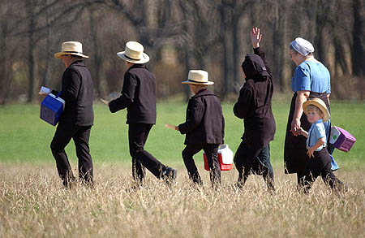

Style of Dress
The characteristic style of plain Amish dress is the most obvious outward manifestation of their faith, purity and social separation from the world. It demonstrates group allegiance and identity, as well as the willingness to yield to group standards. PA Amish men wear dark-colored suits, straight-cut coats with no lapels, broadfall trousers, suspenders, solid-colored shirts, black socks and shoes, and black or straw broad-brimmed hats. Shirts fasten with conventional buttons; suit coats and vests fasten with hooks and eyes. Men do not wear mustaches and generally wait until after marriage to grow beards. Amish women wear modest, solid-colored dresses, usually with long sleeves and a full skirt, a cape and apron. The clothing is fastened with straight pins or snaps. Hair is never cut and is worn in a bun on the back of the head, concealed by a prayer covering. Single women in their teens and twenties wear black prayer coverings for church services; a white covering is worn at most times by women of all ages. PA Amish women are not permitted to wear jewelry or printed fabrics.
Language
At home and in their community, the Amish in PA speak a dialect of German. This language, originally known as Pennsylvania Deutsch, has gradually become known as Pennsylvania German, or Pennsylvania Dutch. The use of this dialect binds the PA Amish together and naturally limits interaction with the non-Amish. Amish children learn English at school and also study High German for worship services.
Electricity
The Amish taboo on electricity has become one of the public symbols of their separation from the world. Because public electric and utility lines provided a literal and mysterious connection to the outside, the use of power generated from them - and from generating plants - is forbidden. This ban has prevented secularly influences from intruding into the home and has silenced endless debates over the use of new electrical gadgets such as radios, TVs and appliances and more. While the 110-volt power generated from public utility lines is prohibited, 12-volt self-contained batteries are unconnected to the outside world, and therefore permitted. In order to power tools for the cottage industry, farm equipment and some household appliances, the Amish in PA get creative, using air or hydraulic powered motors. This pressure can be used to operate larger household equipment like washers and sewing machines, but not smaller ones such as clothes dryers, toasters, blow dryers, microwaves, TVs, and doorbells. Bottled gas is used to operate major appliances such as refrigerators, stoves and water heaters. Home freezers have been banned due to the fear that they would lead to other electric appliances. To light their homes and shops, the PA Amish utilize pressurized gas lanterns to mount on walls, hang from ceilings and attach to mobile carts. - See more at:

Financials
Despite their separation from modern culture, the Amish in PA are entangled with the larger economic system. They lean heavily on the broader world for raw materials and supplies, and they use banks. Just like other citizens, they pay all taxes, with the exception of social security. Similarly, the PA Amish pride themselves on being self-sufficient and do not collect social security benefits, unemployment or welfare checks. Financial security and protection come from the community itself, most outwardly visible in the Amish barn-raising. But the Lancaster County Amish have also created other ways to help church members in time of need. An Amish Aid Society was formed, by which members are assessed and money collected to help rebuild after a disaster. This is a modest system of fire and storm insurance. Those with medical bills to pay are helped by church alms. Again, in Lancaster, an Amish Church Aid was developed for serious problems as an informal version of hospitalization insurance.
Recreation
Rather than going away from the home to parks or movies, PA Amish children enjoy activities in the house and around the farm. With animals and wide open spaces, the farm is an exciting, although sometimes dangerous, playground. Children also get together at school and after church; baseball is the most popular activity in the school yard. The fact that recreation is tied so closely to the home is perhaps the reason that some teenagers rebel before they join the church by participating in "worldly" recreation. This stage, often referred to as "sowing wild oats," may include driving a car, drinking parties, attending movies, playing on a (non-Amish) baseball team, going to the shopping mall - even purchasing a car. Youth may trade their traditional Amish dress for modern clothing and get a modern haircut to blend into public crowds. This period between childhood and adult membership in the church offers Amish youth a chance to explore and experience the outside world before choosing to accept or reject the culture of their birthright via baptism as an adult in the church. Many activities normally considered work are forms of recreation for the Amish adult. Quilting bees and frolics are an enjoyable mixture of work, socializing and recreation. Some Amish do travel, making trips to visit Amish communities in other states, and also to museums, the zoo or other places of interest. Some Amish enjoy an occasional trip to eat out, or a birthday party at a local restaurant. The most popular leisure activity for the Amish seems to be visiting. This may include everyone from relatives and the sick to non-Amish friends.
Health
Health care practices vary considerably across Amish communities and from family to family. For a basic overview of this aspect of Amish life, please see this information compiled by the Young Center for Anabaptist and Pietist Studies at Elizabethtown College in Elizabethtown, Pa. Regarding vaccinations, "The Amish do vaccinate their children," says Dr. Kevin Strauss, MD, of the Clinic for Special Children in Strasburg, Pa., which specializes in addressing the health needs of the Plain population. "Their overall vaccination rate is lower in comparison to the general populace, but you'll find a higher rate of vaccination among younger Amish than in older generations. The bi-weekly vaccination clinic that we run is very busy." Strauss also sees autistic behaviors among the Amish children he treats, "sometimes as a stand-alone condition, but also when the symptoms are one component of a broader medical issue like mental retardation or seizure disorders."